Scope. This session emulates the everyday operator — a cooperative cashier and a store admin — clicking through the login, dashboard, POS, inventory, forecasting, finance, and user-management screens as they exist in the running system. Findings are reported from a usability lens (clarity, safety of the click, discoverability), not a QA lens (unit-test coverage or code hygiene).
Method. Puppeteer + system Chrome drove 14 captures across both desktop (1440×900) and mobile (390×844) viewports. Screenshots are attached inline as evidence. See docs/uat/screens/ for source PNGs.
Result. 40 issues found — 3 Critical, 14 High, 16 Medium, 7 Low. Nothing here blocks a demo, but several items would be caught quickly if the cooperative's real staff started using the app. Fixes are suggested per row.
| Severity | Count | Themes |
|---|
| Critical | 3 | Credential leak on login, redirect-without-message on protected route, currency inconsistency across screens. |
| High | 14 | Ambiguous KPI labels, missing empty-state guidance, non-obvious click targets in POS, accidental-logout risk, no product images, alarming "Email alert" buttons, discount-modal password without show/hide. |
| Medium | 16 | Inline vs modal Add Product, always-editable Min Stock cell, small-text diagnostics, missing tooltips, mixed button styles, sidebar branding, forecast-legend distinguishability. |
| Low | 7 | Labels, tooltips, avatar menu, empty-state illustrations, keyboard shortcuts, cursor-pointer misuse. |
Screen 1 — Login
Two captures: default landing state and the response to bad credentials.
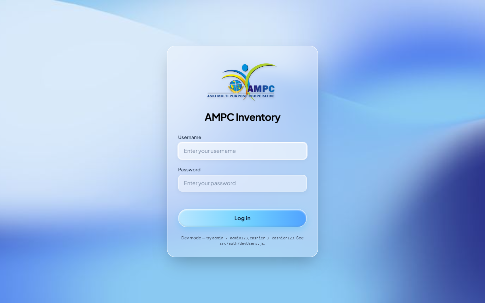
Figure 1a — Login page as an end user first sees it.
Under the "Log in" button the page prints "Dev mode — try admin / admin123, cashier / cashier123. See src/auth/devUsers.js." This is visible to any visitor of the deployed URL, so it (a) leaks working credentials for two roles, (b) advertises "dev mode" to an outsider, and (c) reveals an internal filename. A real end user has no reason to see any of this.
Fix: gate the hint behind import.meta.env.DEV so it only renders on npm run dev, not on npm run build/preview. If it must appear in staging, put it behind a keyboard shortcut instead of on-screen text.
Cashiers on shift with adjacent screens can't verify what they typed. Every other password field in the app (Admin Verification, Supervisor Discount) already has an eye icon — login is inconsistent.
Fix: reuse the existing <PasswordInput /> pattern from the AdminAuthModal.
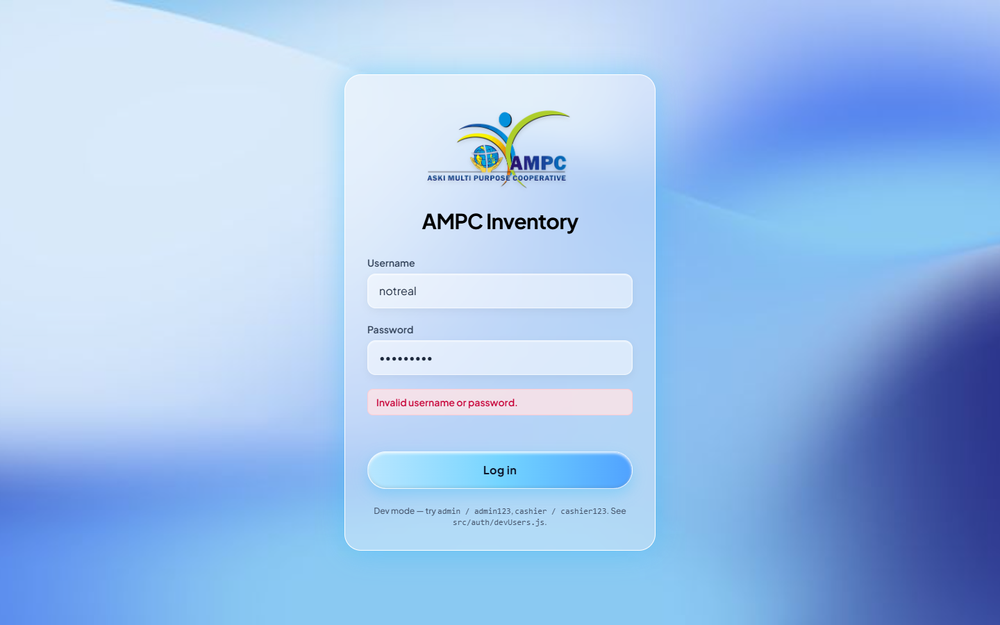
Figure 1b — Error message after typing wrong credentials.
"Invalid username or password." tells the user nothing about which field failed, whether they're locked out, or how to recover a forgotten password. There is no "Forgot password?" link anywhere.
Fix: add a "Forgot password?" link that opens a contact-your-admin flow, and after 5 failed attempts show a "Locked — contact admin" state with an obvious next step.
The system is a POS and an inventory manager. Calling it "AMPC Inventory" on the login card undersells it to a cashier who thinks they've opened the wrong app.
Fix: rename to "AMPC POS & Inventory" (matches the repo/README).
Screen 2 — Admin Dashboard
Figure 2 — Landing dashboard immediately after admin login.
Total Revenue Today reads PHP 6,832.10, but the AI Demand Forecast tile just below it reads ₱140,759, and the Recent Transactions rows switch between PHP 150.00 and — on other screens — ₱150.00. It looks like two systems glued together.
Fix: single formatPeso(n) helper using ₱, applied everywhere. Add an ESLint rule to catch bare "PHP " prefixes.
In a seeded demo where dates span months, the admin can't tell what "today" means. This will be a support ticket the moment the system goes to a real coop that closes at 6 pm and the number never matches the register tape.
Fix: subtitle the card with "as of 21 Sep 2026, 03:35 PM" and refresh it on the same cadence as the socket.
"AI Demand" appears on one line and "Forecast" on the next, because the green "● LIVE" pill crowds the title bar. It reads as two disconnected labels.
Fix: shorten to "AI Forecast" or move the LIVE pill under the header.
That count is ~70% of the 2,429-item catalog. Presenting it in red with a bright "Email alert now" call-to-action guarantees alert fatigue and eventually a cashier hitting the button just to make it stop.
Fix: split into "Critical (0 stock)" vs "Below reorder point" and hide the email button behind a menu.
The tile shows a green pill "+32.5%" with no comparison window. Is that vs. yesterday? last month? forecast delta? The number under it (₱140,759 projected) is 30-day, so most users will read it as "we grew 32.5% this month" and be wrong.
Fix: label as "vs prior 30 days" or drop it.
Every visible row (Whole Milk 1L, Sliced Bread, Cheddar Cheese) is tagged "Expired" but the user can't tell whether that means "expired yesterday" or "expired six months ago". The column reads "STATUS / DAYS" but the DAYS half is empty.
Fix: render "Expired 3d ago" / "Expires in 5d" using the anchor date the forecast already computes.
In a POS/inventory app this reads as "back to landing page" rather than "the dashboard". Every peer product (Odoo, Loyverse, Square) calls it "Dashboard".
Fix: rename the sidebar item.
The bell in the top-right is a bare icon. Users can't tell there are unread alerts without clicking, which they won't.
Fix: add a red dot / numeric badge driven by the same feed that fills the bell popover.
The chart title says "Trend" but only scatter dots are drawn. A trend line or connected polyline would communicate direction.
Fix: switch Recharts <Scatter> to <Line>, add a 7-day rolling average behind it.
Screen 3 — Inventory Management
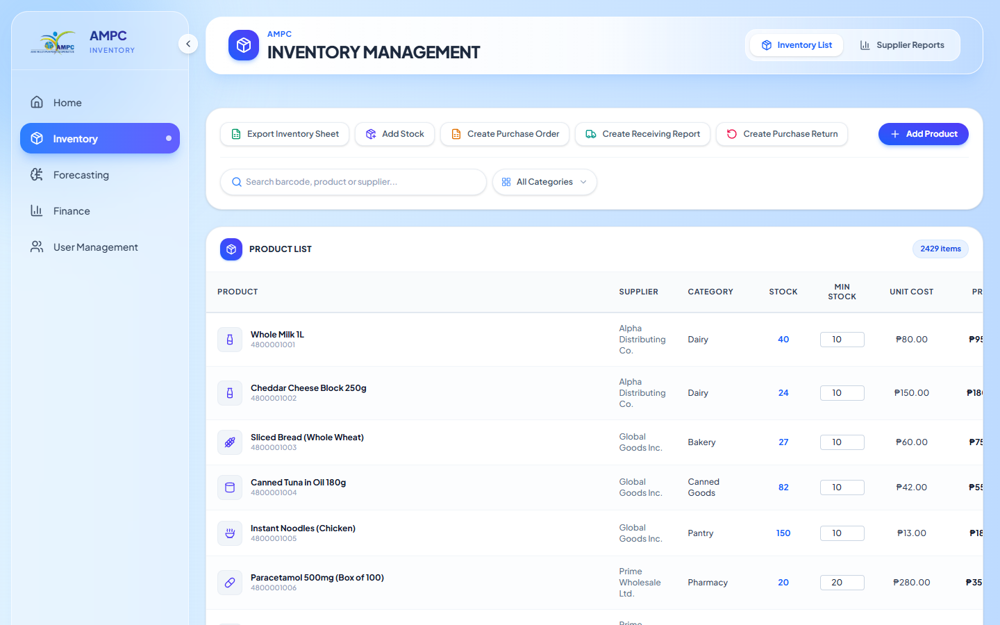
Figure 3a — Inventory list, 2,429 items after AMPC import.
Every product row renders a <input value="10"> under "MIN STOCK". Any accidental keystroke overwrites the reorder threshold without a save button. There's no confirm, no undo.
Fix: render as a static number, tap-to-edit a pencil icon; require Enter to commit and Esc to cancel.
"40", "24", "27", "82" are blue and bold like anchor tags. Clicking them does nothing. False affordance.
Fix: either wire them to open a stock-movement history drawer, or make them plain text.
On the test machine this dropped the frame rate noticeably while scrolling. Cheap store hardware will struggle.
Fix: paginate at 50 rows or add react-window virtualization.
Excel? CSV? Filtered? All products? A first-time click is a guess.
Fix: label as "Export .xlsx" and, when a search or category filter is active, subtitle "Export filtered (N items)".
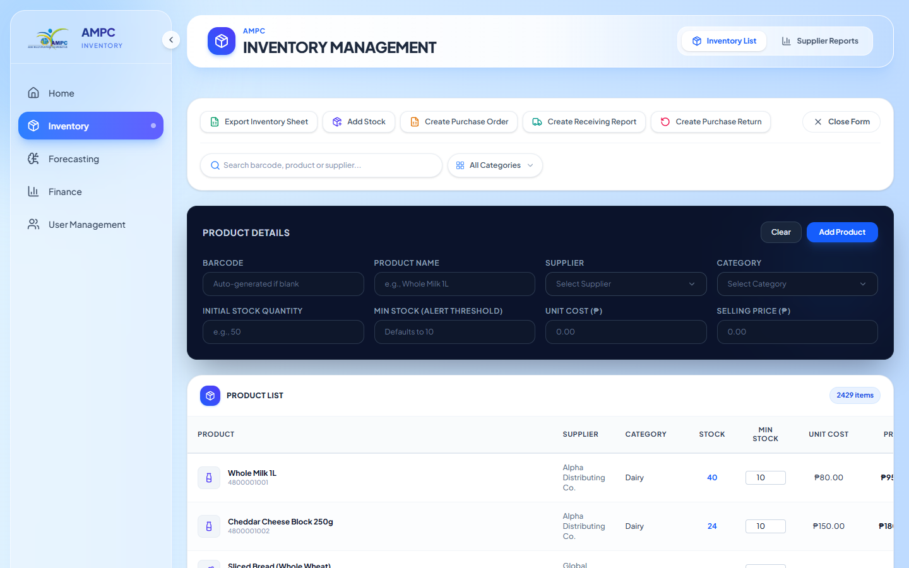
Figure 3b — Add Product opens as an inline panel, pushing the list down.
If the admin scrolls the list to double-check a similar SKU, the form scrolls too and loses focus. It also visually competes with the list header.
Fix: turn it into a right-side slide-in drawer (matches the Purchase Order modal pattern already in the codebase).
After the AMPC import there are 30+ categories in use. If the admin needs a 31st, they can't create it here — they have to leave the form.
Fix: combobox that accepts free text and offers "Create 'new value'" at the bottom of the suggestion list.
Screen 4 — Demand & Sales Forecasting
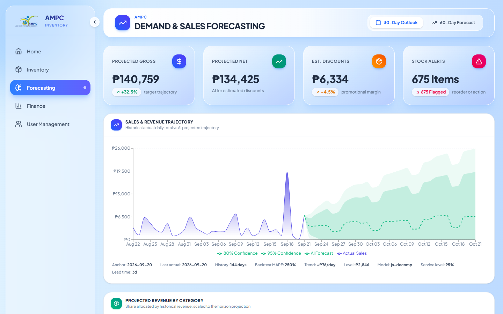
Figure 4a — 30-day outlook.
A MAPE of 250% means the point forecast is off by 2.5× on average. To a coop administrator, "Backtest MAPE: 250%" reads like "look how much data we have" — not "the model is unreliable this month".
Fix: colour-code the MAPE (green < 20%, amber < 50%, red otherwise) and add a "?" tooltip: "average absolute error of the last 7-day backtest".
All four legend entries (80% Confidence, 95% Confidence, AI Forecast, Actual Sales) use identical dashed round markers. Colour alone is doing the work and the bands are close in hue.
Fix: use solid swatches for the bands and dashed line for the forecast; darken the actual-sales fill.
The strip "Anchor / Last actual / History / Backtest MAPE / Trend / Level / Model / Service level / Lead time" packs eight critical facts in tiny type on a light background. A supervisor giving a demo can't point at it.
Fix: bump to 12.5px, darker slate; break into two rows if it wraps.
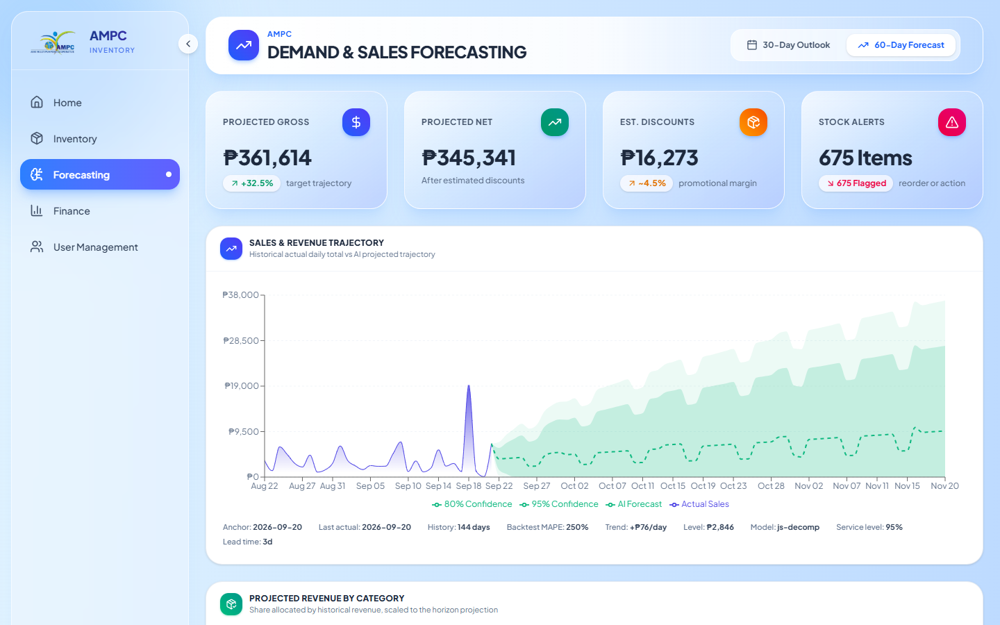
Figure 4b — 60-day forecast: prediction bands fan out visibly, useful.
The KPI tiles change silently after ~600ms. On slower hardware or a bad Wi-Fi, the user won't know something is loading.
Fix: skeleton state on the KPI cards during the fetch.
Screen 5 — Finance & Audit Control
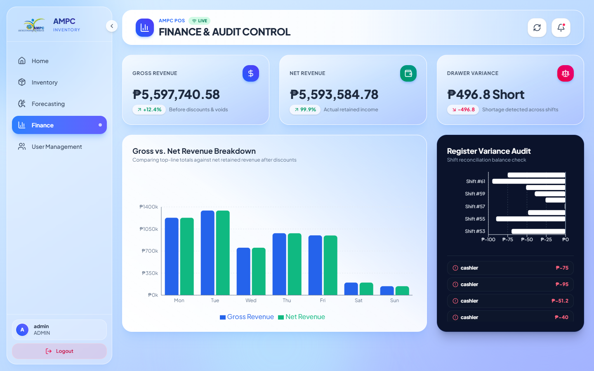
Figure 5 — Finance overview after AMPC import (₱5.5M+ gross).
A 99.9% figure next to Net Revenue reads as "profit margin". It's actually "net / gross" — a truism if discounts are near zero. Admins will confuse this with margin.
Fix: label as "Retained after discounts" or drop the pill.
Four rows show "cashier ₱-75", "cashier ₱-95", "cashier ₱-51.2", "cashier ₱-40". Which shift? Which date? Without that, an admin can't investigate the shortage.
Fix: show shift #61 · cashier · Sep 21 AM per row.
Both are plain icons with no labels. First-time users have to click to guess.
Fix: title="" tooltip on hover, or use a Lucide + text pattern like elsewhere.
Weekend bars are tiny relative to Tue/Thu. A log-scale toggle or a "% of weekday max" secondary line would help spot slow days.
Fix: add a "% of best day" caption per bar.
Screen 6 — User Management (protected)
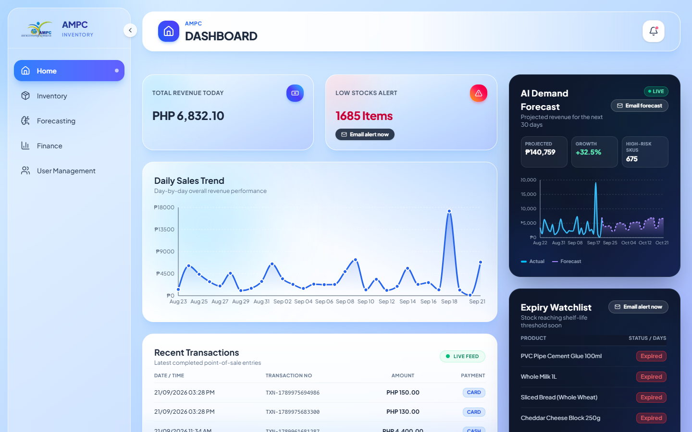
Figure 6 — Navigating directly to /pages/ims/UserManagement silently drops the user back on the Dashboard.
Deep-linking to /pages/ims/UserManagement lands on the Dashboard. The user (or a bookmark, or a support link) has no idea their request was rejected. If the sidebar guard is the canonical entry, the route itself should either open the admin-auth modal automatically or render an inline "Verify to continue" state.
Fix: move the isAdminAuthenticated guard inside the route component so the modal fires on direct navigation too.
The sidebar only shows "User Management" to ADMIN, then still demands the admin password before opening. Either the role check is enough, or the password should replace it — asking for both is friction without extra safety in a single-session context.
Fix: keep the modal only for destructive actions (delete/deactivate), not for the read-only landing.
Screen 7 — Cashier POS
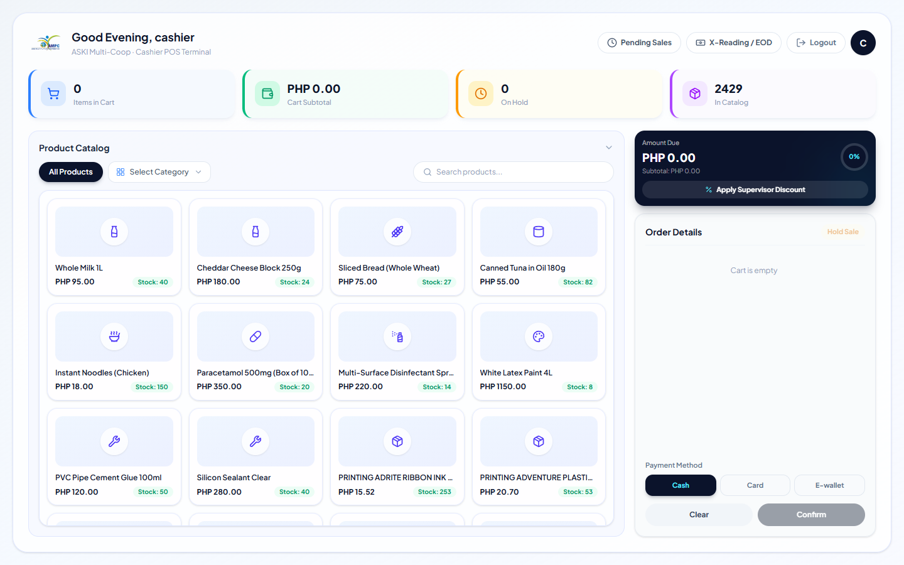
Figure 7a — POS opened as cashier, empty cart.
2,429 SKUs, one graphic. Cashiers use visual grouping to spot the right SKU; identical placeholders force them to read every title. Real-world POS operators lose seconds per line item.
Fix: even a category-icon fallback (bottle, snack, printer, etc.) would help; a real image URL on the Product schema is the long-term answer.
"PRINTING ADRITE RIBBON INK …" and "Multi-Surface Disinfectant Spr…" cut off silently. Hovering does nothing. Cashiers can't verify SKU before adding.
Fix: native title on the truncated span, or a hover popover.
The top bar shows Pending Sales · X-Reading/EOD · Logout · avatar. One misclick during a busy queue ends the shift and voids the cart on the next re-login. In real coop cashier flow this is a repeated fear.
Fix: move Logout behind the avatar menu with a "You have items in the cart. Log out anyway?" confirmation.
First-time cashiers click it, nothing happens, they click harder. No tooltip, no "Add products to enable".
Fix: replace the disabled state with a live label ("Cart is empty" / "Select payment method").
"All Products" toggle is active but the adjacent dropdown still says "Select Category". Users read them as separate contradictory filters.
Fix: when "All Products" is active, dim the dropdown and set its label to "Any".
The right-side panel shows "Amount Due ₱0.00 0%" with a subtotal ₱0.00 underneath. The 0% is meant to reflect discount; on an empty cart it's noise.
Fix: hide the 0% pill until the cart has ≥ 1 item.
Just the sentence, centred. No icon, no "Scan a barcode or tap a product to start."
Fix: illustrated empty state with two hints — scanner icon + product-tile icon.
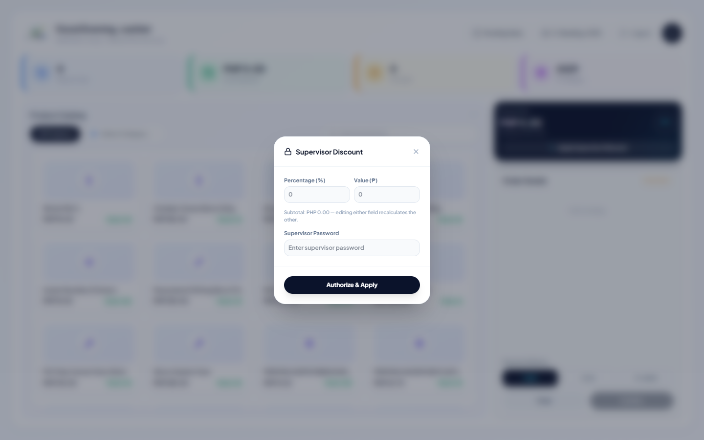
Figure 7b — Supervisor Discount modal.
Clicking "Apply Supervisor Discount" with no items in the cart still opens the modal. Typing anything ends up producing a "cannot apply" error only after Authorize & Apply.
Fix: disable the trigger button until cart.length > 0.
Same fix as UAT-02 — but especially painful here because the supervisor is standing behind the cashier at rush hour.
Fix: add the eye toggle used in the Admin modal.
The subtitle "editing either field recalculates the other" is buried in small type. Cashiers will type both by reflex and be confused when one overwrites the other.
Fix: radio-style toggle "Percent | Peso" that hides the inactive field.
Screen 8 — Mobile (390 × 844)
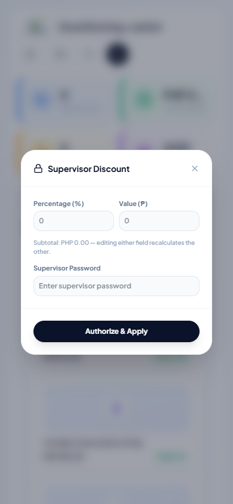
Figure 8a — Discount modal on a phone — the modal itself is fine but the background POS UI is unusable at this width.
At 390px the sidebar shrinks but there is no hamburger toggle to reclaim horizontal space, POS cards squeeze into unreadable widths, and the dashboard KPIs vanish off-screen.
Fix: hide the persistent sidebar under md; expose a top hamburger; make the POS product grid switch from 4-col to 2-col below 768px.
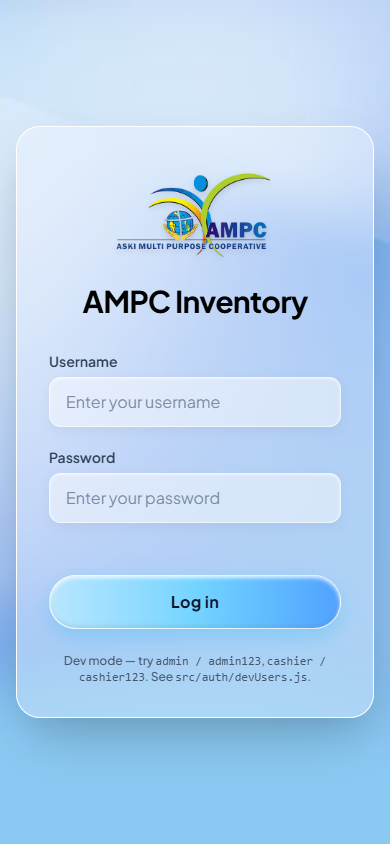
Figure 8b — Same session on mobile: because sessionStorage was cleared, the user is back on login. The login card itself scales cleanly.